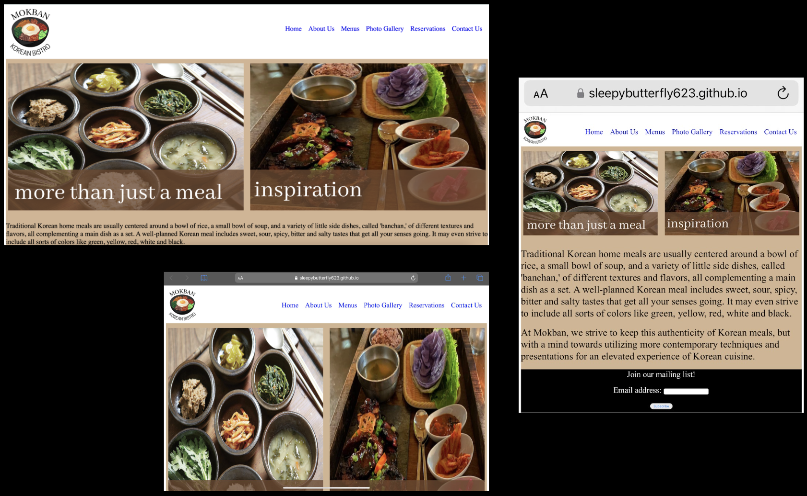

In the heart of downtown Providence, Mokban has served residents quality Korean food since 2017. And it is clear that through their menu items, presentation, and service within their restaurant, they are committed to quality meals.
Although their quality speaks volume, I would like to take the time to study how they engage with their customers beyond in-person service: via their website. My objective for this is to study this site and provide suggestions to improve the usability for their customers through the following:
After assessing these issues, I'd like to show through low-fidelity wireframes, visual design style guide, high-fidelity prototypes
To view, please click HERE.
To view, please click HERE. Be sure to select the drop down arrow near the Figma logo in the top left corner to view all prototypes.
After analyzing and thoroughly determining possible solutions for this interface, I have recreated the homepage of the original Mokban site. This enables mobile, desktop, and tablet users to have similar usability experiences. To view, please click HERE.
Highlights
Based on the original design of the Mokban website, it is apparent that the site was designed with mobile devices in mind since tablet and desktop users are unable to view their content. Keeping this in mind, it was important to re-design this site with varying screen dimensions so that the usability could be standard across. Going beyond this, it was also important to improve upon the site by rethinking how it could be more accessible to all users. Moving forward, it will be crucial for myself and other designers to follow the guidelines when designing: usability, memorability, the conceptual model, and accessibility.